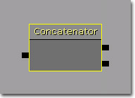
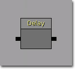
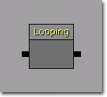
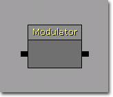
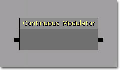
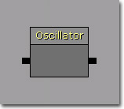
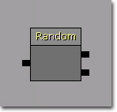
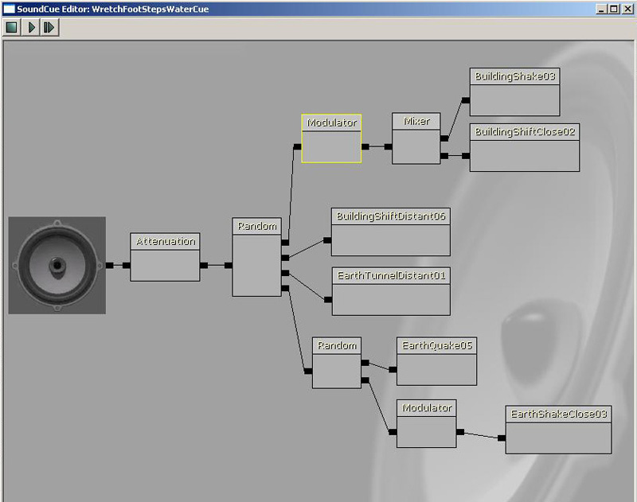
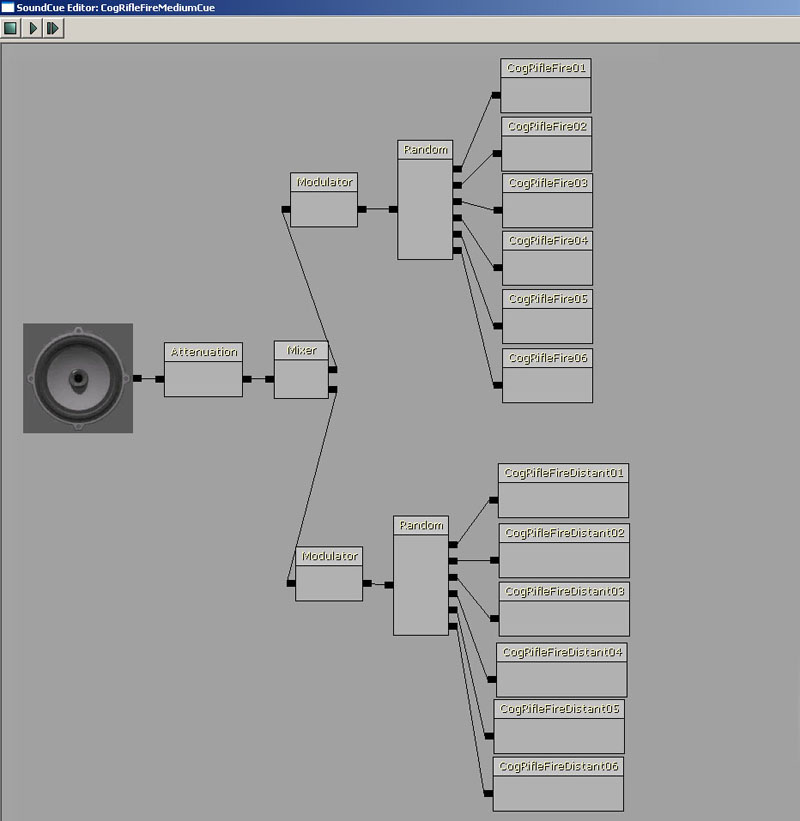

UDN
Search public documentation:
SoundCueReferenceJP
English Translation
中国翻译
한국어
Interested in the Unreal Engine?
Visit the Unreal Technology site.
Looking for jobs and company info?
Check out the Epic games site.
Questions about support via UDN?
Contact the UDN Staff
中国翻译
한국어
Interested in the Unreal Engine?
Visit the Unreal Technology site.
Looking for jobs and company info?
Check out the Epic games site.
Questions about support via UDN?
Contact the UDN Staff
UE3 ホーム > 「Unreal」エディタとツール > サウンドキュー エディタ ユーザーガイド? > サウンドキュー リファレンス
サウンドキュー リファレンス
概要
Attenuation (減衰) ノード
 Attenuation (減衰)
Attenuation (減衰)
- Attenuate (減衰) - TRUE の場合は、入力されたサウンドを距離に応じてフェードアウトさせます。
- Spatialize (空間化) - TRUE の場合は、ノードは、入力されたサウンドを 3D 空間に配置します。
- dB Attenuation At Max (dB 減衰マックス) - 最大距離における音量をセットします。単位はデシベルです。
- Distance Algorithm (距離アルゴリズム) - 入力されたサウンドを減衰する際に使用する補間方法をセットします。
- ATTENUATION_Linear (減衰_線形) - 入力されたサウンドを距離に応じて線形に減衰します。
- ATTENUATION_Logarithmic (減衰_対数) -入力されたサウンドを距離に応じて対数的に減衰します。
- ATTENUATION_Inverse (減衰_逆関数) - 入力されたサウンドを距離に応じて逆関数を使用して減衰します。
- ATTENUATION_LogReverse (減衰_逆対数) - 入力されたサウンドを距離に応じて逆対数関数を使用して減衰します。
- ATTENUATION_NaturalSound (減衰_自然サウンド) - 距離に応じてサウンドが自然に減衰するあり方を近似する特別な関数を使用して入力されたサウンドを減衰します。
- Distance Type (距離タイプ) - 使用すべき特別な減衰モードをセットします。
- SOUNDDISTANCE_Normal (サウンド距離_標準) - 全軸方向で距離に応じて標準的な減衰をします。
- SOUNDDISTANCE_InfiniteXYPlane (サウンド距離_無限 XY 平面) - Z 軸方向の距離だけを使用して入力されたサウンドを減衰します。
- SOUNDDISTANCE_InfiniteXZPlane (サウンド距離_無限 XZ 平面) - Y 軸方向の距離だけを使用して入力されたサウンドを減衰します。
- SOUNDDISTANCE_InfiniteYZPlane (サウンド距離_無限 YZ 平面) - X 軸方向の距離だけを使用して入力されたサウンドを減衰します。
- Radius Min (半径最小) - サウンドの原点から減衰が始まる地点までの距離です。入力されたサウンドは、0.0 からこの距離までの範囲にあれば 100% の音量で再生されます。
- Radius Max (半径最大) - サウンドの原点から減衰が完了する地点までの距離です。入力されたサウンドは、 Radius Min (半径最小) からこの距離までの範囲にあれば 100% から 0 %までの割合で減衰します。
- Attenuate With LPF (ローパスフィルタによる減衰) - TRUE の場合は、ローパスフィルタによる減衰が有効になります。
- LPFRadius Min (ローパスフィルタ半径最小) - サウンド原点からローパスフィルタが適用される地点までの距離をセットします。
- LPFRadius Max (ローパスフィルタ半径最大) - サウンド原点からローパスフィルタの最大量が適用される地点までの距離をセットします。
Concatenator (連結) ノード

Soundノード Concatenator (連結)- Input Volume (入力音量) - 入力されたサウンドそれぞれのために使用する音量のリストです。異なるソース音量のサウンドを正規化することができます。
Delay (遅延) ノード

遅延- Delay [Min/Max] (遅延 [最小 / 最大]) - Delay (遅延) ノードがポーズを継続する [最小 / 最大] 時間をセットします。
Distance CrossFade (距離クロスフェード) ノード
 Sound ノード Distance CrossFade (距離クロスフェード)
Sound ノード Distance CrossFade (距離クロスフェード)
- Cross Fade Input (クロスフェード入力) - クロスフェードする入力サウンドのリストです。それぞれの入力サウンドには以下のプロパティがあります。
- Fade In Distance [Start/End] (フェードイン距離 [開始 / 終了]) - フェードインを [開始 / 終了] するサウンドキュー原点から、当該入力サウンドまでの距離をセットします。
- Fade Out Distance [Start/End] (フェードアウト距離 [開始 / 終了]) - フェードアウトを [開始 / 終了] するサウンドキュー原点から、当該入力サウンドまでの距離をセットします。
- Volume (音量) - 完全にフェードインしたときの当該サウンドの音量をセットします。
Looping (ループ) ノード

ループ- Loop Indefinitely (無限ループ) - TRUE の場合は、 Loop Count Max (ループ最大回数) と Loop Count Min (ループ最小回数) の値にかかわらず、入力サウンドが無限にループします。
- Loop Count [Min/Max] (ループ回数 [最小 / 最大]) - 入力サウンドがループする [最小 / 最大] 回数をセットします。
Mixer (ミキサー) ノード
* Sound ノード Mixer (ミキサー)*
- Input Volume (入力音量) - 入力されたサウンドそれぞれのために使用する音量のリストです。異なるソース音量のサウンドを正規化することができます。
Modulator (モジュレーター) ノード

モジュレーション- Pitch [Min/Max] (ピッチ [最小 / 最大]) - 入力サウンドの [最小 / 最大] ピッチをセットします。
- Volume [Min/Max] (音量 [最小 / 最大]) - 入力サウンドの [最小 / 最大] 音量をセットします。
Continuous Modulator (持続的モジュレーター) ノード

Sound ノード 持続的モジュレーター- [Pitch/Volume] Modulation ([ピッチ /音量] モジュレーション) - 入力サウンドの [ピッチ / 音量] を制御するための分布です。デフォルトでは Uniform (一様) の分布になっていますが、エディタで他のタイプに変更することができます。
Oscillator (オシレーター) ノード

オシレーター- Modulate [Volume/Pitch] (モジュレーター [音量 / ピッチ]) - TRUE の場合は、[音量 / ピッチ] のモジュレーションが有効になります。
- Amplitude [Min/Max] (振幅 [最小 / 最大]) - 正弦波のモジュレーションの振幅です。1 を値の中心にしています。たとえば、振幅を .25 にすると、[最小 / 最大] が .75 と 1.25 となり、その領域の値を用いてランダムにモジュレートされることになります。
- Frequency [Min/Max] (周波数 [最小 / 最大]) - 正弦波のモジュレーションの周波数です。この値を 2 で割ったものがヘルツに等しくなります。たとえば、周波数が 20 の場合は、10 ヘルツ (回数 / 秒) でオシレートします。 [最小 / 最大] の領域がランダムな抽出の際に使用されます。
- Offset [Min/Max] (オフセット [最小 / 最大]) - 正弦波に適用されるオフセット値です。一般的には位相 (phase) と呼ばれています。この値はすべて 2*Pi が乗じられます。 [最小 / 最大] の領域がランダムな抽出の際に使用されます。
- Center [Min/Max] (中心 [最小 / 最大]) - 中心が .5 の場合は、.5 を中心にして [最小 / 最大] の領域が決まり、ランダムな抽出に使用されます。
Random (ランダム) ノード

Sound ノード Random (ランダム)- Weights (重み) - 特定のサウンドが選ばれる確率を決定する、各入力サウンドのための重みのリストです。
- Randomize Without Replacement (置換なしランダム) - TRUE の場合は、サウンドが選択されると、入力サウンドが全部再生されるまで再度再生されることはありません。
例
 上記では、4 つのオーディオファイルがトリガー時に同時に再生され、再トリガー時にランダムな変化をとります。
上記では、4 つのオーディオファイルがトリガー時に同時に再生され、再トリガー時にランダムな変化をとります。

上記では、1 つのオーディオファイルがトリガー時に再生され、再トリガー時にランダムな変化をとります。
上記では、ランダムにトリガーされる 2 組のオーディオファイルがミックスされます。